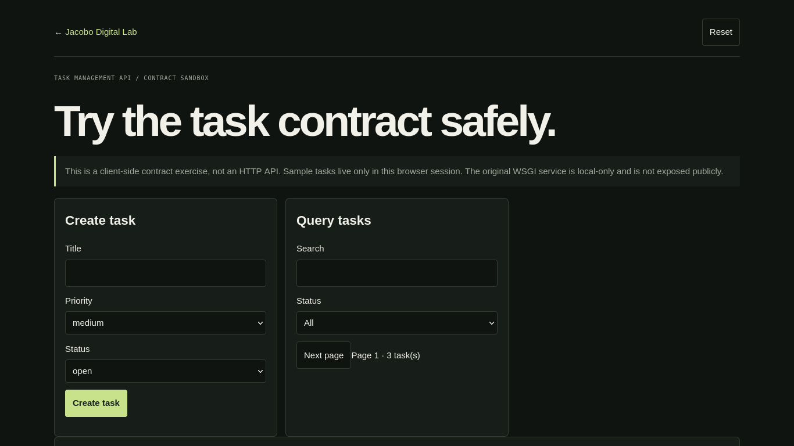

PROJECT CASE STUDY
Task Management API
Exercise the task API contract safely
Create, edit, search and filter fictional tasks. The interface validates inputs and keeps its records in browser memory; no public API server is exposed.

Open live demo ↗01 / PROBLEM
Problem: practice a small CRUD API’s request and validation behavior.
02 / OBJECTIVE
Objective: explore the documented task contract without exposing the local service.
03 / SOLUTION
Solution: an in-browser contract sandbox with deterministic validation and CRUD.
04 / ARCHITECTURE
Architecture: static JavaScript state, no HTTP endpoint, auth, shared database or server.
05 / IMPLEMENTATION
Implementation: create/update/delete, status/priority validation, query and pagination.
06 / TESTING
Testing: invalid values, empty title, status changes, search, delete and reset.
07 / LIMITATIONS & ROADMAP
Limitations & roadmap: not the original WSGI API, and no public backend.
08 / ACCESS
Access: sandbox, source repository and contract notes.